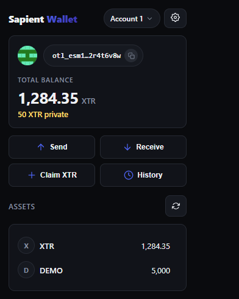
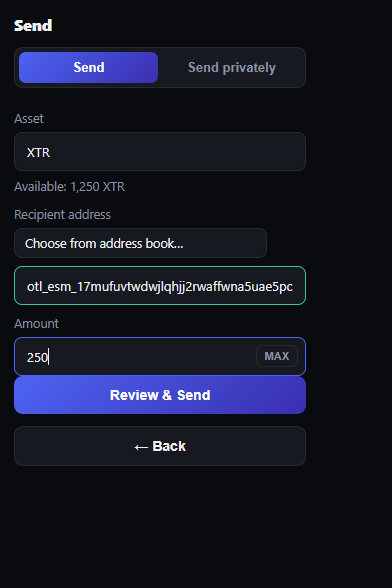
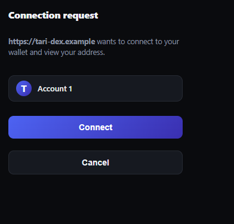

A wallet that
follows only you.
Self-custody for Tari Ootle. Sapient generates and holds its own 24-word recovery phrase, then signs and submits transactions straight to the network — no wallet daemon required.

Everything a self-custody wallet should be
Built directly against the Ootle network, with the privacy tooling most wallets bolt on later shipped from day one.
True self-custody
Generates and holds its own 24-word recovery phrase. Keys are derived and used on-device — they never leave the extension.
No daemon required
Signs and submits transactions directly to the network. Optionally connect a running tari_ootle_walletd for hardware-wallet-style external accounts.
window.tari provider
A MetaMask-style injected provider for dApps — connect, sign, and submit in the page's own context, not a WalletConnect relay.
Private by design
Stealth-type transfers, confidential vaults, and view-key-gated balance access — a connected site sees only what you explicitly grant.
HTLC support
Fund, claim, and refund hash-time-locked contracts natively — the primitive cross-chain swaps and escrows are built on.
Multi-account
Multiple accounts per wallet, each independently derived. Switch freely without re-entering your seed.
See it in action
The full flow — balances, sending, and dApp approvals — in a compact popup that stays out of your way.
Balances at a glance
Real on-chain divisibility and symbol for every token you hold.

Send to a wallet address
Just paste an otl_… address — Sapient handles the rest, even for brand-new recipients.

Explicit dApp approval
Every connection, sign, and view-access request is a clear, reviewable popup.
From seed to submitted transaction
Create or import
Generate a fresh 24-word recovery phrase, or import an existing one. A password locks the extension between sessions.
Derive & hold keys
Account keys are derived on-device. Sapient signs with them locally — the seed never leaves the extension.
Build & approve
A dApp requests a connection or a transaction; you review and approve it in a dedicated popup, every time.
Submit directly
The signed transaction goes straight to an Ootle indexer — no intermediary daemon required for your own accounts.
Why "Sapient"?
Named after sapient pearwood — the self-aware wood Discworld's ever-loyal, fiercely protective Luggage is carved from. Fitting for a wallet that follows only you and answers to no one else, in the same nerdy-but-earnest naming tradition as Tari's own testnets (Weatherwax, Igor, Esmeralda — all Discworld references too).
Own your keys on Ootle.
Free, open-source, and built for testnet experimentation today.